install.packages(c("shiny", "scplot"))17 Graphical user interface - Shinyscan
The scan package includes a graphical user interface (GUI) that enables users to perform a wide range of operations and analyses supported by the package. This GUI is implemented as a Shiny application that runs in a standard web browser.
Shinyscan was originally developed as a tool for teaching purposes. To facilitate this, the application displays the corresponding R syntax for each operation executed via the interface. Beyond its pedagogical utility, shinyscan is also well-suited for exploratory data analysis, and the visual presentation of results with immediate feedback.
17.1 Start Shinyscan
To run the shiny app, you need to install two additional packages: shiny and scplot.
You can start the app by executing the function shinyscan() from the scan package. Based on your system settings, the app will immediately be opened within your standard browser or in R-Studios internal viewer pane. In case the app starts within the internal viewer pane, I recommend that you click Open in Browser.
TipTutorial Video
18 Menues
flowchart LR
A("`🔢 **Data**
New
Load`") --> B("`🧮 **Stats**
Descriptives
Overlap indices
Regression analysis
Randomization test
...
`")
A --> T("`🔄 **Transform**
Select cases
Combine phases
Filter measurements
Transform variables
Set dependent variables`")
T --> B
T --> C
A --> C("`📈 **Plot**
Arguments
Stat templates
Deisgn templates
Anotate templates
`")
B --> Ex("`💾 **Export**
Html
docx
txt
png
`")
C --> Ex
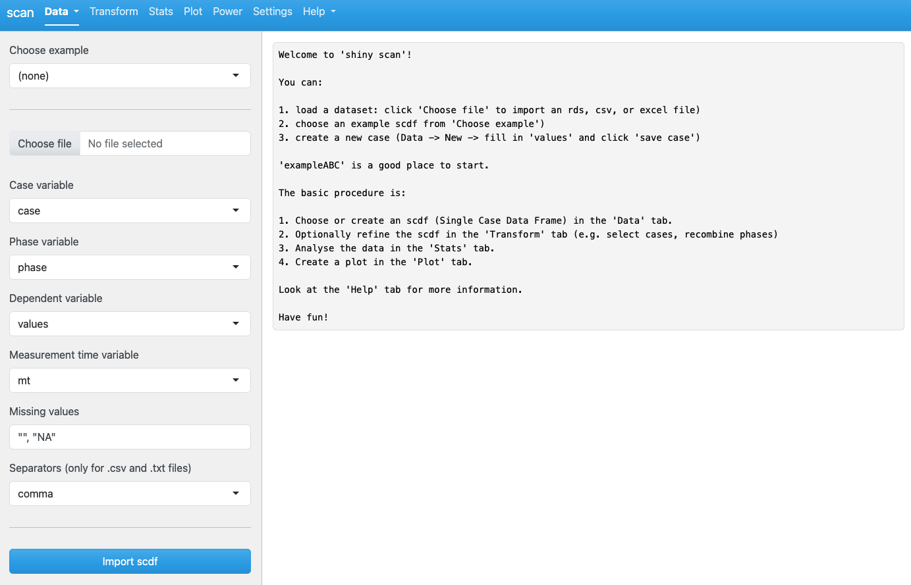
The app is organized into seven main menus (tabs), each serving a specific function:
Data: Create new datasets, load and save existing ones, and access example datasets.
Transform: Perform data selection, filtering, and other transformations.
Stats: Conduct statistical analyses using various single-case methods.
Plot: Generate and export single-case design plots.
Power-test: Perform power analyses tailored to single-case designs.
Settings: Modify the default behavior and preferences of the application.
Help: Access additional documentation and external resources.
By default, shinyscan opens with the Data tab selected.
18.1 Data menue
18.1.1 New / Edit
The Data tab in shinyscan allows you to manually create single-case datasets (scdf, see Section 3.2). This is especially useful for small datasets, as it avoids the need to write R code. The interface contains several input fields:
Select case
To add a new case, choose New case.
To edit an existing case, select the case from the list. The corresponding data will then be loaded into the input fields below.
Values
Provide the central dependent variable and phase structure of the scdfs with the values of a named vector. For example, A = 1,2,3,4, B = 8,7,8,9,8,7, C = 8,7,6,7,6,5. You can use line breaks to structure your data entry (you can remove the comma at the end of each line if you wish):
A = 1,2,3,4
B = 8,7,8,9,8,7
C = 8,7,6,7,6,5Measurement times
Here you can optionally enter measurement times. If no measurement times are specified, they are automatically set to 1, 2, 3, ..., n.
Additional variables
Add additional variables in the style: [varname] = value, value, value, value, ....
If you want to add several variables, use line breaks:
engagement = 1,5,4,3,6,5
support = 3,4,2,5,6,4Case name
You may provide an optional name for the case. If left empty, a random name will be generated.
A set of buttons is located below the input fields:
Save case: Adds the new case to the existing scdf when -new case- is selected under Select case. If an existing case is selected, it will be overwritten.
Remove case: Deletes the selected case.
Clear all cases: Deletes the entire scdf.
Clear input fields: Clears all entries from the input fields above.
After clicking Save case, a summary of the current scdf appears in the output area on the right.

You can continue to add several more cases.
Click Save scdf to save the scdf to your local hard drive. By default, the output file name includes the prefix scdf, the number of cases, the phase names, and the current date and time (e.g., scdf-01-ABC-250322-130744.rds). Files are saved in R’s standard .rds format. Both the file format and file name can be changed in the Settings tab.
If you want to see the R syntax, go to the Settings tab and switch on Show scdf syntax:
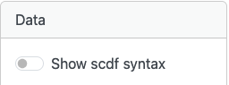
Go back to Data –> New / Edit and the output will show R syntax:

TipTutorial Video
18.1.2 Load an example data file
Go to Data -> Load and select an example from Choose example:
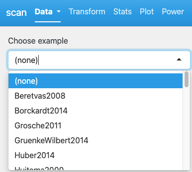
A summary of the selected scdf is displayed in the output pane
Now, if you want to import that file, click Import scdf below. Caution: This will also replace a previously generated or loaded scdf file.
You can now continue with the example scdf or go to Data -> New /Edit to modify the dataset.
18.1.3 Load existing data files
Switch to Data -> Load:
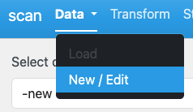
Click Choose file and select a file from your hard disk.
Four file types are accepted:
A comma separated values
.csvfile (see Section 3.4.1 for more information on the structure of these files).An Microsoft Excel
.xlsxfile (see Section 3.4.1 for more information on the structure of these files).An
.rdsfile containing an scdf (e.g., created with save scdf within the shiny app). See Section 3.3.An
.Rfile containing a syntax for creating an scdf. This text file must create an object called study which contains an scdf. Here is an example:
case1 <- scdf(c(A = 58, 56, 60, 63, B = 51, 45, 44, 59, 45, 39, 83))
case2 <- scdf(c(A = 47, 41, 47, 52, 54, 65, B = 55, 37, 51, 60, 60, 65, 55, 46))
study <- c(case1, case2) If your data file already contains a valid scdf object (e.g. for rds or R files), the output pane will give you specific information about the data file. Click Import scdf if you want to import the data file.
If your data file contains a data frame, it will be displayed in the output area on the right. shinyscan will attempt to assign the columns to the corresponding elements of an scdf. Review these assignments and, if necessary, correct them using the drop-down menus.
Missing values: Define which values in the data frame should be treated as missing during import (default: empty values and NA).
Separator: For .csv files, specify the character that separates values. By default, this is a comma. Adjust this setting if your file uses a different separator.
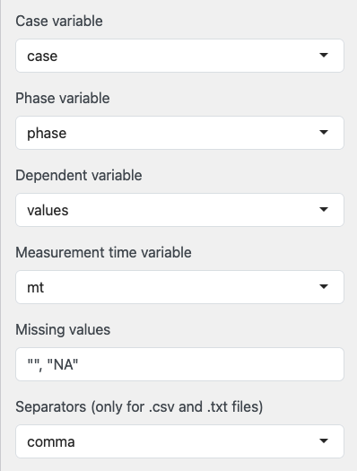
Click Import scdf to create and import an scdf from the data. The resulting scdf will be displayed in the output pane on the right.
TipTutorial Video
18.2 Transform
The Transform tab allows you to modify, create, recalculate etc. new variables from your scdf.
If you make any changes here, all operations in other tabs (stats, plot etc.) will be based on the transformed scdf.
This tab also displays the raw-data contained in the scdf.
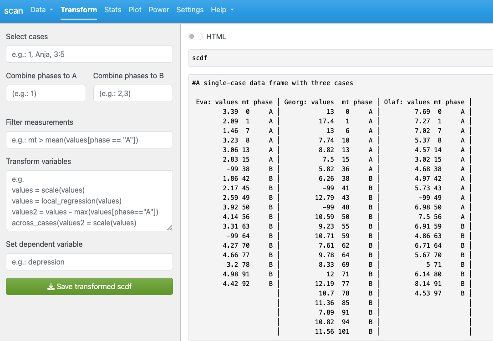
Select cases
Select cases either by case number or by case name. Use commas to select multiple cases and a colon to select ranges of cases (e.g. 1, 7:9, 10).
Combine phases
This option is specifically designed for later analyses that compare exactly two phases (such as overlapping indices). If your scdf has more than two phases, you can define which phases are Phase A and Phase B. You can combine multiple phases into one phase by selecting multiple phases separated by commas. Select phases by number (1 for 1st, 2 for 2nd etc.) See Section 9.1.1 for more details.
Filter measurements
This takes a logical expression defining a selection of measurements. You can use variable names within your scdf and R functions. For example, if you want to select all measurements above 6 you code values > 6. If you want to select all measurements whose values are above the median of Phase B, you code values > median(values[phase == "B"]). See Section 4.2.
Transform variables
This section allows you to create and modify variables in a complex way. For example, for create a new variable with standardised values code values_std = scaled(values). See Section 4.3 for a detailed description of the syntax.
Set dependent variable
If your scdf has multiple dependent variables, you can switch them for the further analysis and display in this field (see Chapter 6).
Clicking on Save transformed scdf will save the transformed scdf to your hard drive.
18.3 Stats
This tab is used to select and refine analysis procedures. The following section explains the functionality of the GUI. For detailed descriptions of the statistical methods, refer to the corresponding sections of this book.
The Statistic field provides access to a range of procedures. By default, the descriptives of the scdf are displayed.
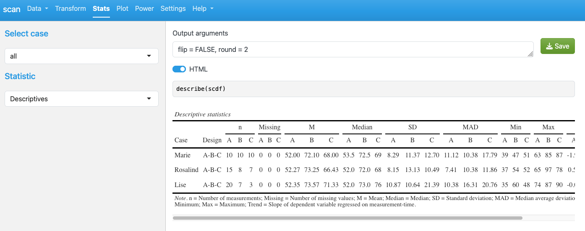
For most procedures, specific output arguments can be defined. These arguments apply to the corresponding print() function (text output) or export() function (HTML output). The default arguments for each function are shown in the Output arguments field. You can adjust these settings, and the output below will update immediately.
For example set flip = TRUE here to switch columns and rows:
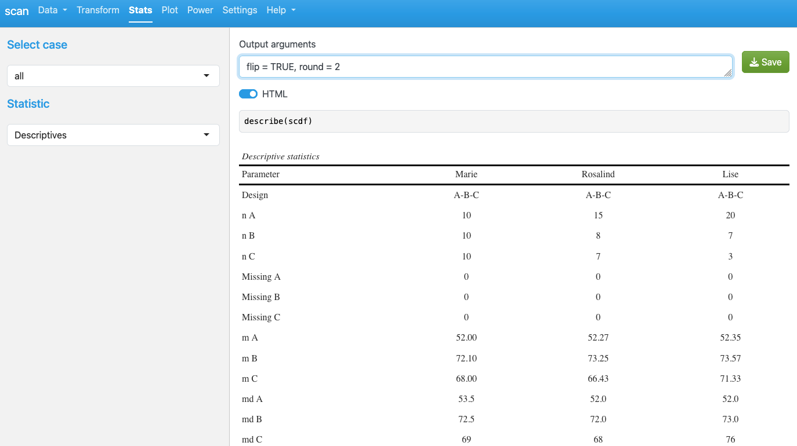
Click Save to export the output content. The save format (text, html, or docx) is based on the settings of the HTML switch and the Settings tab.
18.3.1 Function arguments
If you choose a statistical procedure which takes additional arguments, a list of the available arguments will be provided on the left pane. Here is an example for the hierarchical piecewise regression function. All arguments are provided with their respective default settings (please refer to the respective section in this book or the help files for detailed explanations of the arguments):
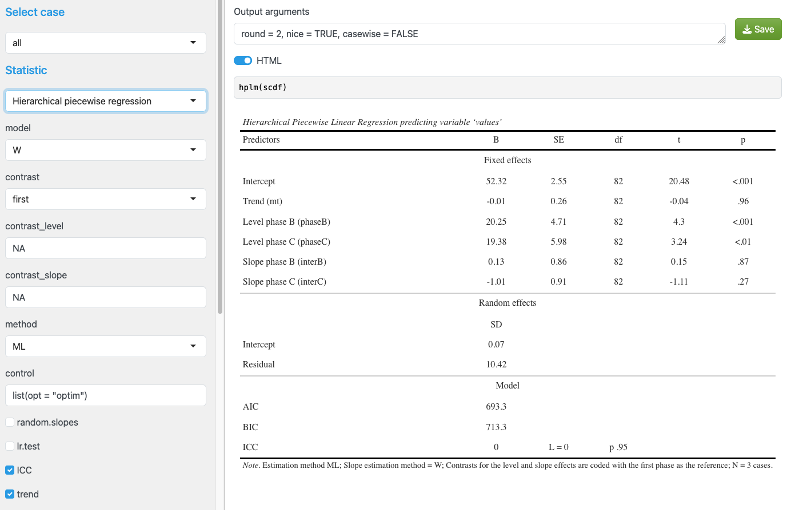
18.4 Plots
The Plot tab lets you create graphs using the scplot function (see Chapter 5 for details).
If a valid scdf is loaded or created, a standard scplot appears by default.
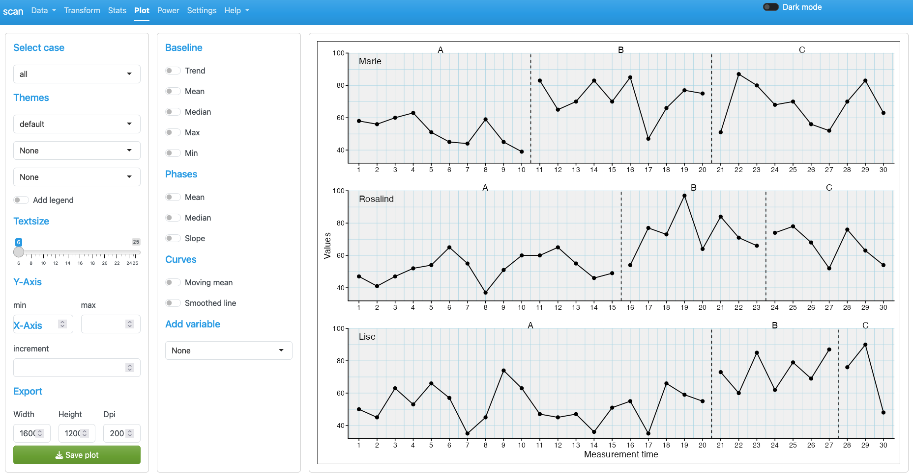
On the left of the plot are two cards that show a few options that can be applied to the plot.
On the left side of the plot, two option cards allow you to adjust the graph:
- Select case: Plot all cases or a specific case.
- Themes: Use three drop-down menus to apply full visual themes or selected theme elements.
- Add legend: Adds a legend to the right of the plot.
- Text size: Sets the base size of all text elements.
- Y Axis: Define the minimum and maximum of the y-axis.
- X Axis: Set the increment of x-axis values. If labels overlap, choose a larger increment (e.g., 5 prints x-axis values 1, 6, 11, 16, 21…).
- Export: Specify width, height, and DPI. Click Save plot to export the plot as a PNG file. Filename and size can also be set in the Settings tab.
- Baseline: Adds baseline statistics to the graph and extrapolates them to all other phases.
- Phases: Adds statistics for each phase separately to the plot.
- Curves: Adds a smoothed curve to the data.
- Add variable: Adds a second variable from the
scdfto the plot.
18.5 Settings
The Settings tab allows users to customize various aspects of shinyscan’s behavior. The available options are grouped by functional area:
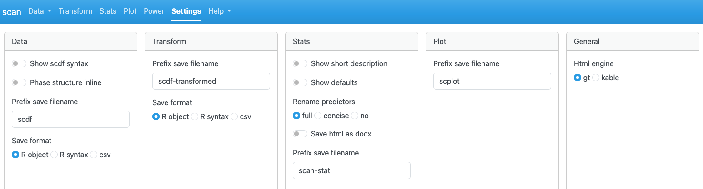
18.5.1 Data
Show scdf syntax defines whether the output in the Data tab is shown as R syntax (convert(scdf)) or as a summary (summary(scdf)).
Phase structure inline specifies the coding of the phase structure when Show scdf syntax is switched on.
Prefix save filename defines a prefix used for automatically generated filename when exporting the scdf.
Save format sets the export format of the scdf file.
18.5.2 Transform
Prefix save filename defines a prefix used for automatically generated filename when exporting the transformed scdf.
Save format sets the export format of the scdf file.
18.5.3 Stats
Show short description gives a short description of the selected statistical function when switched on.
Show defaults If switched on, the generated R syntax includes all function arguments, including those set to their default values. This can be useful for teaching and documentation.
Rename predictors allows choosing among three naming conventions for predictors in the regression output.
Prefix save filename defines a prefix filenames generated when exporting statistical results.
Save format sets the export format.
18.5.4 Plot
Prefix save filename defines a prefix for filenames when exporting plots.
18.5.5 General
Html_engine specifies the internal engine used to generate HTML tables, either via the gt or kableExtra package (for scdf and statistical results). Only gt currently supports exporting tables in .docx format. The kableExtra engine is retained for compatibility purposes but may be deprecated in future versions of the package.